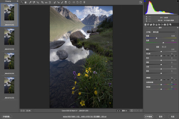

爱尚摄影
首页
摄影资讯
摄影技巧
摄影作品
摄影比赛
联系我们
M4/3最小的广角镜头---SLR Magic 8mm f4 试片
个人使用心得：这个镜头是在淘宝上买的，全新镜头，价格为880元，总体来说，把光圈开小后，成像效果还可以，无畸边，边缘也控制得不错，应该和老蛙7.5mm差不多，但是价格确实可以。本人现在上传我这两天的测试原图（没有修过的），请大家相互讨论一下，也可以加我的QQ或者微信交流。
干货来啦，教你如何制作精致图章
图章，在很多时候代表着一个人的身份和个性。尤其对于摄影师来说，摄影作品有着自己的图章，那可是一件十分自豪的事情！下面，小编就来教你如何制作一个精美的图章！
风光摄影后期中增加对比度的六个方法
这篇教程从思路到技巧，完整的解决了风光摄影后期中对比度的环节。风光摄影后期中，增减对比度是一个很重要的环节，也是一个很容易出问题的环节。易出现对比度不足或对比度太高，损失了细节等等一系列的问题。
【干货】Gopro视频拍摄进阶技巧！
随着互联网视频的发展，越来越多人开始知道GoPro这个视频神器，越来越多人开始用GoPro拍摄视频！得益于它超小的体积，超高的便携性，精确的白平衡，超广的视角，变态的景深，和五花八门的配件，你无需担心人物是否被取景，焦点是否正确，甚至你都不用拿着它！一个刚入门的初学者就能用它拍出不错的画面，记录旅途上精彩瞬间。
风光摄影后期操作进阶版来袭！
一张打卡照 拍摄于年保玉则仙女湖 不甘心只拍一张年保玉则证件照，萌生了徒步拍摄年保玉则的想法，深入拍摄。

景深合并系统讲解 ，论后期如何打造全景深照片？
景深合成没有想象中的那么神秘，想拍出一张前前后后全清晰的照片也没有那么难，按照步骤操作即可。这篇教程从前期到后期系统的讲解如何打造全景深照片！
关于“堆栈”最全面的教程
“堆栈”后期教程来了！从前期拍摄到后期堆栈 ，模拟慢门篇，后期还会有堆栈的其他方面！